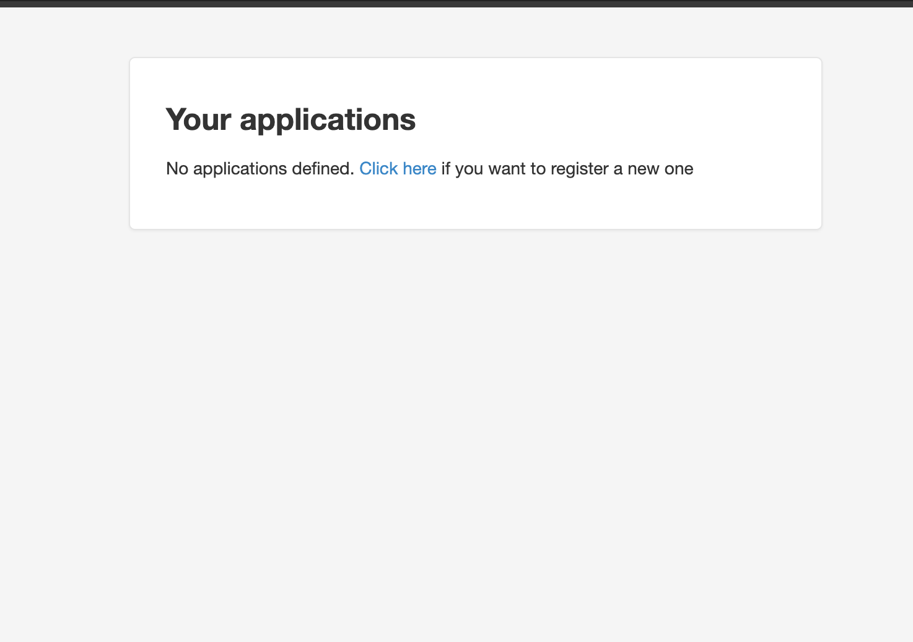
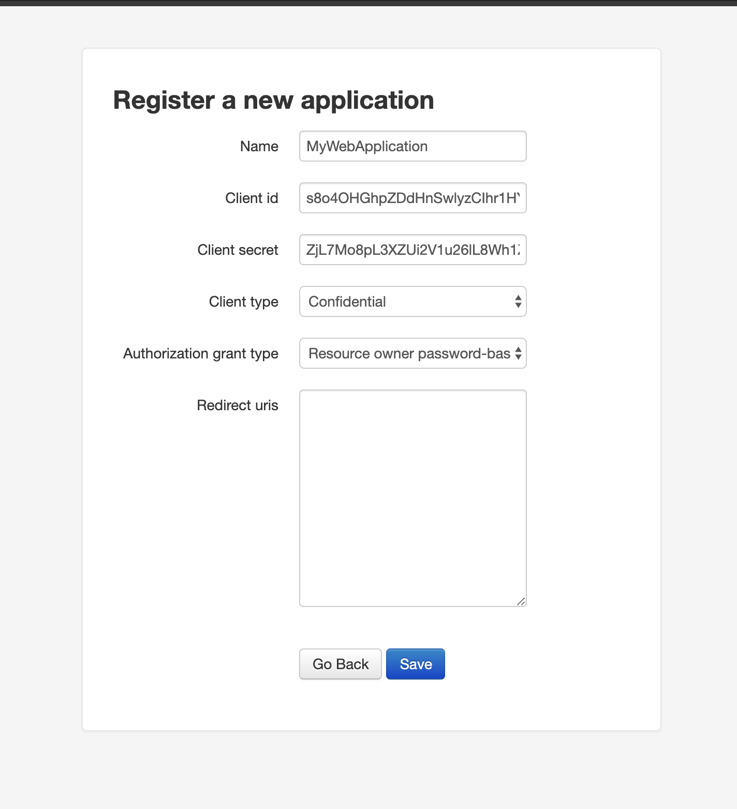

# Securing APIs with OAuth
# OAuth 2.0
OAuth (Open Authorization) is an open standard for token-based authentication and authorization on the Internet. OAuth, allows an end user’s account information to be used by third-party services, such as Facebook, without exposing the user’s password.
# Authentication & Authorization with OAuth 2.0
In a simple OAuth authentication flow,
- A user (Resource Owner) enters credentials in Client app Example: Facebook Android app
- Client sends these credentials to an
Authorization Serverwhere these credentials are validated. If the given credentials are valid then theAuthorization Servergeneratestokenswith which Client can make subsequent API calls. - On receiving the tokens, client uses
AccessTokento get data (which is also referred as resource) fromResource Server
# Getting Started
Create a virtualenv and install following packages using pip in a project
$ pip install django-oauth-toolkit djangorestframework
Add rest_framework and oauth2_provider to your INSTALLED_APPS setting.
INSTALLED_APPS = (
'django.contrib.admin',
...
'oauth2_provider',
'rest_framework',
)
# Write a public API
# Write the below dummy view in your views.py
from rest_framework.decorators import api_view
@api_view(["GET"])
def dummy_view(request):
print("Call to dummy_view")
# Update your app urls as below
from django.urls import path
from .views import dummy_view
urlpatterns = [
path('dummy_view/v1/', dummy_view),
]
# Update your project urls
from django.contrib import admin
from django.urls import path, include
urlpatterns = [
path('admin/', admin.site.urls),
path('o/', include('oauth2_provider.urls', namespace='oauth2_provider')),
path('', include('<app_name>.urls')),
]
# Run the Django server
python manage.py migrate
python manage.py createsuperuser
python manage.py runserver 8080
# Test your api
curl http://127.0.0.1:8080/dummy_view/v1/
System check identified no issues (0 silenced).
May 02, 2020 - 07:15:27
Django version 3.0.5, using settings 'project.settings'
Starting development server at http://127.0.0.1:8080/
Quit the server with CONTROL-C.
Call to dummy_view
[02/May/2020 07:15:47] "GET /dummy_view/v1/ HTTP/1.1" 200 0
# Protect your API - Authentication
Lets make your api only accessible by users who are registered in your app.
# Update your settings.py
REST_FRAMEWORK = {
'DEFAULT_AUTHENTICATION_CLASSES': (
'oauth2_provider.contrib.rest_framework.OAuth2Authentication',
),
'DEFAULT_PERMISSION_CLASSES': (
'rest_framework.permissions.IsAuthenticated',
)
}
OAUTH2_PROVIDER = {
# this is the list of available scopes
'SCOPES': {'read': 'Read scope', 'write': 'Write scope'}
}
# Update your view
from oauth2_provider.contrib.rest_framework import OAuth2Authentication
from rest_framework.decorators import api_view, authentication_classes
from rest_framework.response import Response
@api_view(["GET","POST"])
@authentication_classes([OAuth2Authentication])
def dummy_view(request):
print("Call to create_post")
# Test your API
$ curl http://127.0.0.1:8080/dummy_view/v1/
{"detail":"Authentication credentials were not provided."}
# Create a user
$ python manage.py createsuperuser
# Login to your admin panels
- Open
http://localhost:8080/admin/and enter the username and password with which you have created the user.
# Register your web application with oauth (this is a one time thing)
To obtain a valid access_token first we must register an application.
http://localhost:8080/o/applications/

Open the above url create a new application.
- Name: A name of your choice
- Client Type: confidential
- Authorization Grant Type: Resource owner password-based

Note down the Client id and Client Secret. We will be needing it in the next steps.
Now click save to create the application.
ClientId: s8o4OHGhpZDdHnSwlyzCIhr1HYafB4UsOTtnAVnj
ClientSecret: ZjL7Mo8pL3XZUi2V1u26lL8Wh1Z6ZX7JoVV3O8MPsxwmwQXW4lR9CEom3j3d9onyzWWPbmfkEleTgig9arehLEDy9PqsC9OjJNID7HTL6IEtiALAWleGxTumBdUjipXo
# Get your access token and use the API
$ curl -X POST -d "grant_type=password&username=<user_name>&password=<password>" -u"<client_id>:<client_secret>" http://localhost:8080/o/token/
Fill the above curl command with appropriate details and on successful execution you should get similar response as below.
{
"access_token": "g2Sf3YQxUVUQOJ954Qdex1DBb65DOd",
"expires_in": 36000,
"token_type": "Bearer",
"scope": "read write",
"refresh_token": "OM8a0lrrIIheKBQGd0M9077aiwokG6"
}
- Grab your access_token and start using your new OAuth2 API:
$ curl -H "Authorization: Bearer <your_access_token>" http://127.0.0.1:8080/dummy_view/v1/
System check identified no issues (0 silenced).
May 02, 2020 - 08:30:02
Django version 3.0.5, using settings 'mypracticeproject.settings'
Starting development server at http://127.0.0.1:8080/
Quit the server with CONTROL-C.
Call to dummy_view
[02/May/2020 08:30:04] "GET /dummy_view/v1/ HTTP/1.1" 200 0
# Protect your API II - Authorization
Let's say your API should be accessible only if an access token has superuser scope.
from oauth2_provider.contrib.rest_framework import OAuth2Authentication
from oauth2_provider.decorators import protected_resource
from rest_framework.decorators import api_view, authentication_classes
from rest_framework.response import Response
@api_view(["GET"])
@authentication_classes([OAuth2Authentication])
@protected_resource(['superuser'])
def dummy_view(request):
print("Call to dummy_view")
return Response()
- Try access the API with the same
access token.
$ curl -H "Authorization: Bearer <your_access_token>" http://127.0.0.1:8080/dummy_view/v1/
Django version 3.0.5, using settings 'mypracticeproject.settings'
Starting development server at http://127.0.0.1:8080/
Quit the server with CONTROL-C.
Forbidden: /dummy_view/v1/
[02/May/2020 08:33:06] "GET /dummy_view/v1/ HTTP/1.1" 403 0
# Create access token with valid scopes
- Update your settings
OAUTH2_PROVIDER = {
# this is the list of available scopes
'SCOPES': {
'read': 'Read scope',
'write': 'Write scope',
'superuser': 'SuperUser scope'
}
}
- Fetch new access token.
$ curl -X POST -d "grant_type=password&username=<username>&password=<password>&scope=<scope>" -u"s8o4OHGhpZDdHnSwlyzCIhr1HYafB4UsOTtnAVnj:ZjL7Mo8pL3XZUi2V1u26lL8Wh1Z6ZX7JoVV3O8MPsxwmwQXW4lR9CEom3j3d9onyzWWPbmfkEleTgig9arehLEDy9PqsC9OjJNID7HTL6IEtiALAWleGxTumBdUjipXo" http://localhost:8080/o/token/
{
"access_token": "OdDCsWY9NCrEmNvKclZKj8upQOvAy9",
"expires_in": 36000,
"token_type": "Bearer",
"scope": "superuser",
"refresh_token": "ToztM3d5nCAcAtTNYky8EuxiLVpEK6"
}
# Using Refresh Token
Access tokens have a relatively short life span. Once they are expired we can request for a new access token using the refresh token.
$ curl -X POST -d "grant_type=refresh_token&refresh_token=<your_refresh_token>&client_id=<your_client_id>&client_secret=<your_client_secret>" http://localhost:8080/o/token/
{
"access_token": "<your_new_access_token>",
"token_type": "Bearer",
"expires_in": 36000,
"refresh_token": "<your_new_refresh_token>",
"scope": "read write "
}